An item that makes a character, and what happens on the way
An MYO slot is an item that can be spent to make a character. A community hands one out as an event prize, a raffle win, or a shop purchase; the member spends it whenever they like and designs a character of their own. Staff decide what it is allowed to make and review the result. The community never has to be in the room when it is spent.
MYO is the usual community shorthand for make your own. There is no special "MYO slot" object in CharDB — it is an ordinary usable item whose type has been told which characters it makes. Which means it behaves like every other item: it can be traded, granted, sold in the shop, and it has a provenance page.
You can call the item type whatever you like — Thornwing MYO Ticket, Common Slot, Design Voucher. This page says "ticket" throughout because the examples do.
Which species, and which of its variants
Name, traits, details — the whole character
Approve, correct, or refuse the traits
On an item type's edit form, under Administration → Items, there is a Makes on use panel. Pick a species, then tick the variants a holder may choose between. Save.
One species per ticket. The variants are a list, not a single choice, because "good for a Common" and "good for a Common or an Uncommon" are the same feature — the member picks one of the ones you ticked when they spend it.
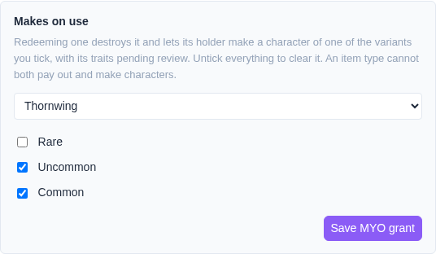
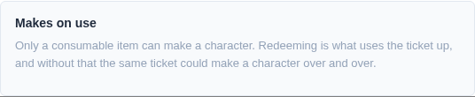
An item type does one thing when used. A type that already pays out currency, edits traits, or changes variants cannot also make characters, and vice versa — clear one before setting the other. Untick every variant to clear an MYO grant.
The item type's own page states the species and every variant the ticket can make. That page is public, so it is also what somebody considering a trade for one can read — they do not have to hold it first.
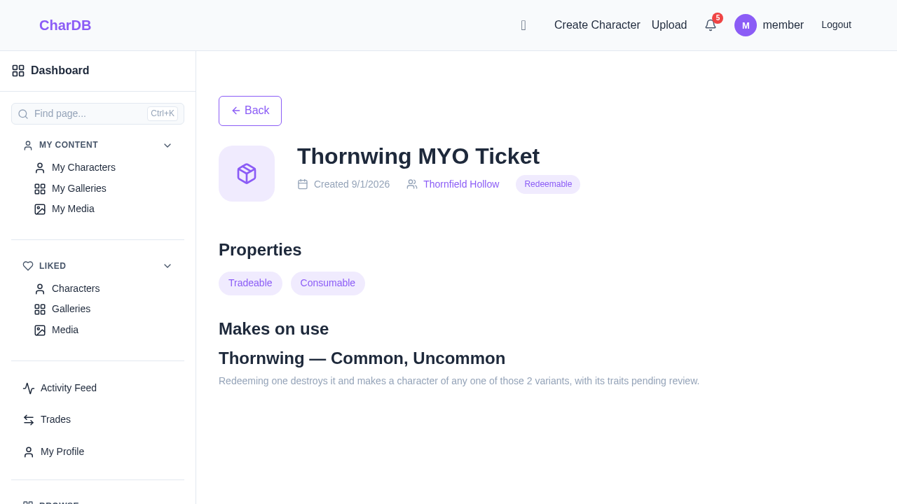
In your inventory, an MYO ticket carries a Make a character button. Where a currency ticket opens a confirm dialog, this one opens the character create page — making a character needs a name, a variant and traits, and none of that fits in a dialog.
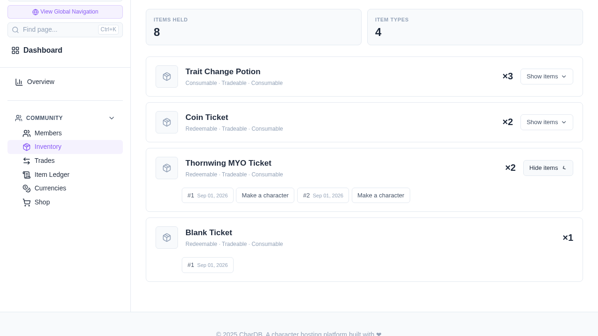
The create page narrows itself to the ticket. The species is fixed and stated rather than chosen, and the variant picker offers only the variants that ticket allows — not every variant the species has.
Everything else is the ordinary create form: name, details, custom fields, tags, visibility, and whatever traits the species has configured. You design the whole character.
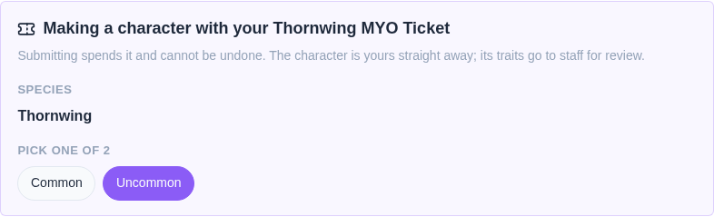
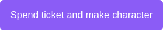
Two fields from the normal create page are absent here:
The character is yours the moment you submit. It is not held back pending approval — you can look at it, share it, edit its profile, and it appears in your character list like any other.
What is pending is its traits. The character carries a badge saying so, and the traits you chose sit in the staff review queue until somebody looks at them.
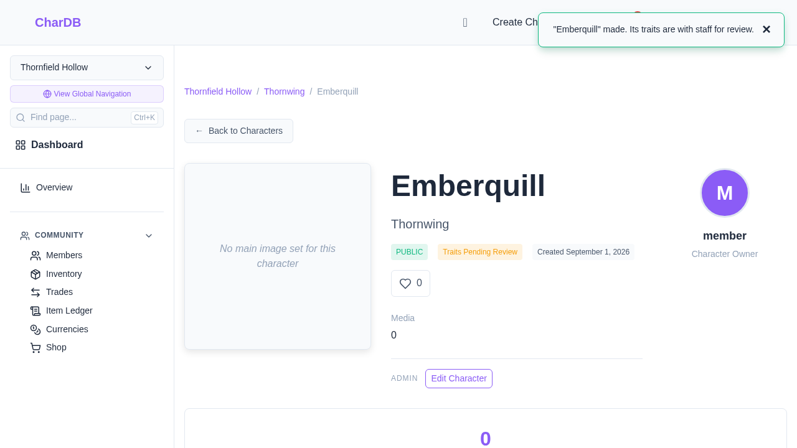
Spending a ticket writes a Redeemed row on the community's item ledger, naming the member who spent it. The ticket's own provenance page still works afterwards — destroyed items keep their history, which is exactly the history a dispute needs.
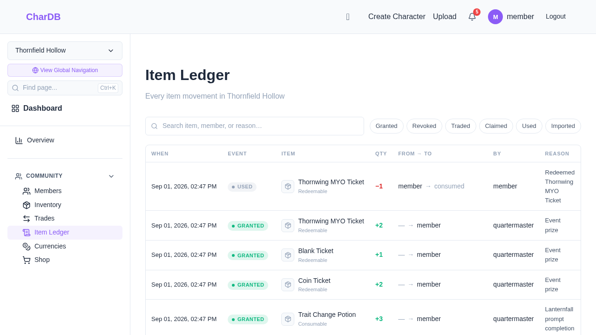
The character lands in Moderation → Trait Reviews, tagged MYO so it is distinguishable from a review that came from an import or an ordinary edit. Reviewing needs the edit any character's registry permission.
An MYO review has two outcomes, and only two:
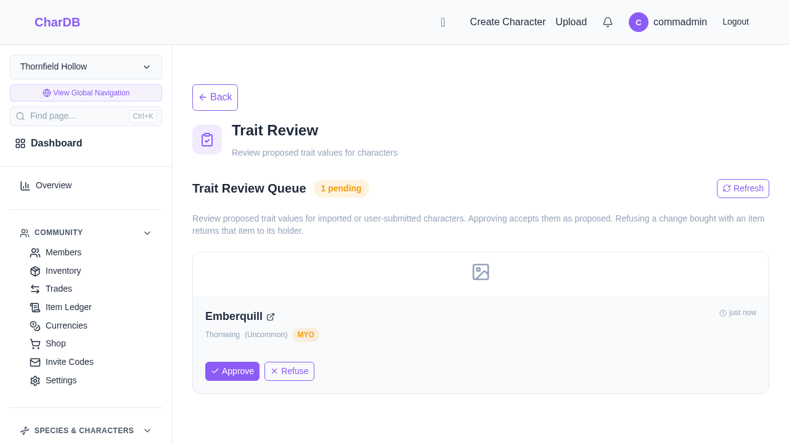
Approving clears the pending badge and, if the character has no official identifier yet, gives it the next number in its species — the highest number already in use plus one, padded to the same width.
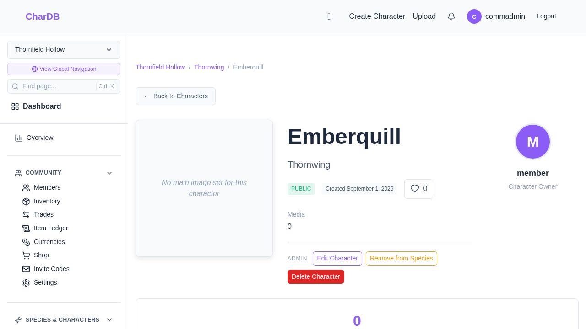
Refusing an MYO character undoes the redemption: the character is removed and a ticket of the type that was spent is returned to its holder. They can try again.
This is different from refusing any other trait review, which restores the character's previous traits. An MYO character has no previous traits — it did not exist before — so "restoring" them would leave the member holding a character with nothing on it and no ticket. Refusing a redemption undoes the redemption.
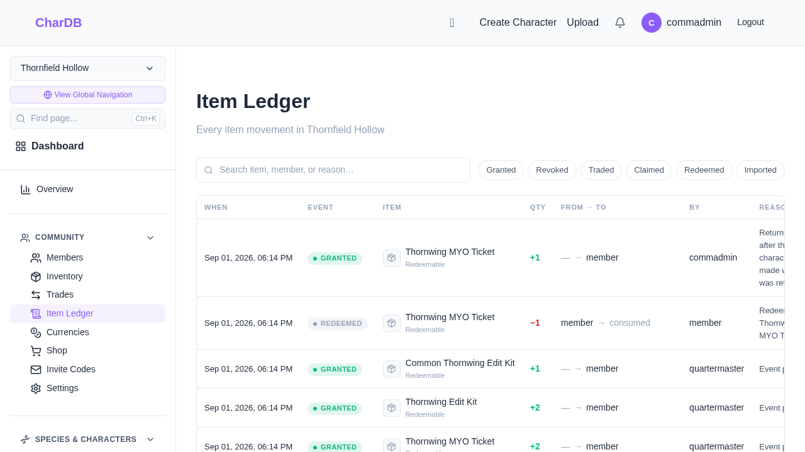
| Reason | Why |
|---|---|
| The variant is not one the ticket allows | Checked against the ticket, not the species. A ticket for a Common is not a ticket for everything under that species. |
| The ticket makes nothing yet | Consumable, but no species and variants set. Spending it would destroy it and hand back nothing. |
| The item type is not consumable | Spending is what uses it up. Without that the same ticket would make a character every time it was submitted. |
| You have left the community | A species belongs to one community, and its characters need a member to own them. |
| The ticket is not yours, or is already spent | Checked at the moment of the write, not before it, so a trade landing in between cannot be raced. Submitting the same form twice makes one character, not two. |
In every case the ticket survives. There is no path where a ticket is spent and no character appears.
A ticket you cannot spend — already spent, or somebody else's — says so when you open the create page, before you have written anything.